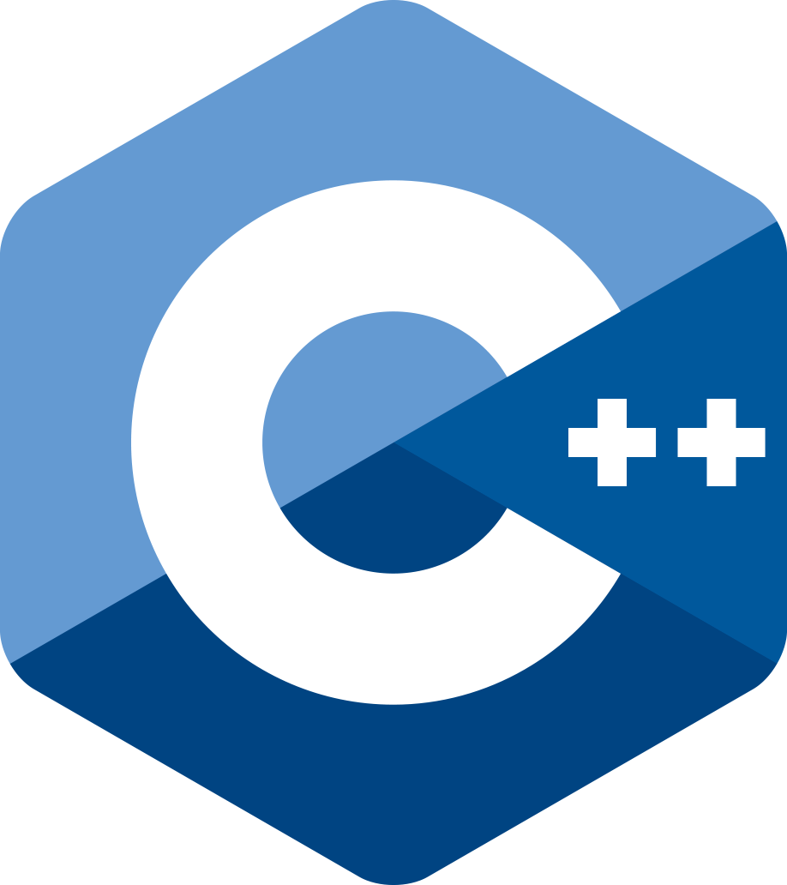

Language

JavaScript
JavaScript merupakan bahasa pemrograman populer yang digunakan untuk membuat website interaktif, dinamis, serta menerapkan fitur-fitur kompleks pada halaman web.
Detail
Python
Python merupakan bahasa pemrograman komputer yang biasa dipakai untuk membangun situs, software/aplikasi, mengotomatiskan tugas dan melakukan analisis data.
Detail

C++
C++ adalah salah satu bahasa pemrogaman komputer yang paling populer di dunia dan dapat digunakan untuk membuat berbagai aplikasi berkinerja tinggi.
Detail